fastJson
Fastjson 是一个 Java 库，可以将 Java 对象转换为 JSON 格式，当然它也可以将 JSON 字符串转换为 Java 对象。Fastjson 可以操作任何 Java 对象，即使是一些预先存在的没有源码的对象。
环境
fastjson 1.2.68
Jdk 1.8.202
漏洞原理
设置@type的类首先能够在mapping中取出，在利用设置期望类，指定@type需要反序列化的类，就能够存入mapping中并实例化。
POC
1 | import com.alibaba.fastjson.JSON; |
第一个@type 会检测checkautotype,如果直接使用org.openqa.selenium.WebDriverException会触发cheOutType 退出,那就需要绕过checkautoType，作者绕过就是使用了expectClass,设定第一个@type 为java.lang.Exception
1 | 1.白名单里的类 |
漏洞分析
fastjson遇到@type会进行反序列化，但是首先会经过一个checkAutoType检测，当置为java.lang.Exception时，能够从mapping中直接选中,继续返回class
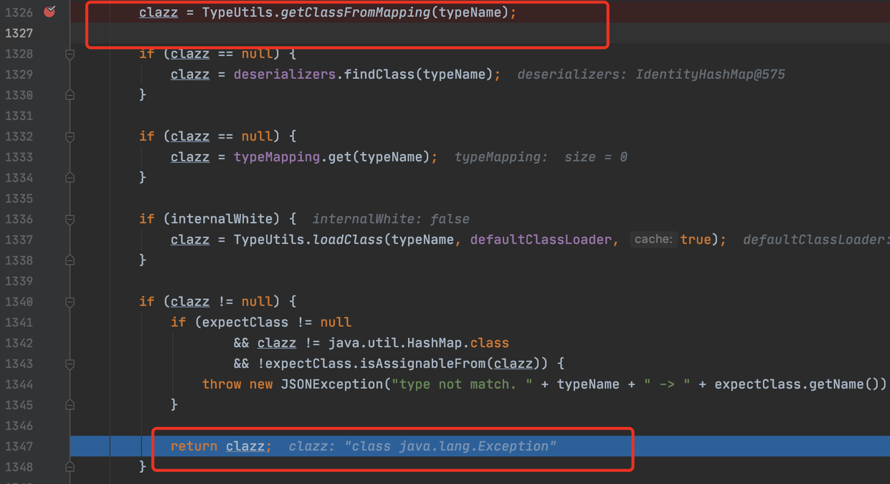
利用java.lang.Exception绕过checkAutoType后，会进行一次反序列化构造.
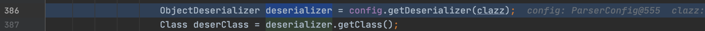
java.lang.Exception满足Throwable子类，生成deserializer
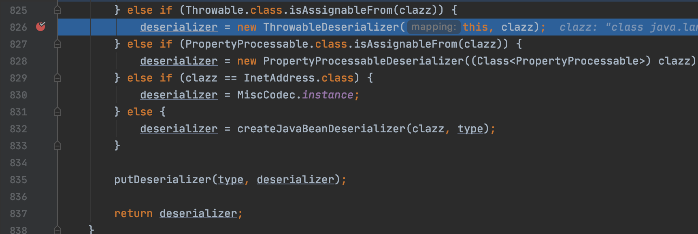
之后进入反序列化org.openqa.selenium.WebDriverException
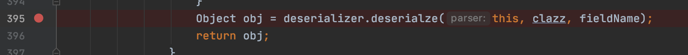
经过scanSymbol 得到key 值为@type，满足JSON.DEFAULT_TYPE_KEY.equals(key)进入if 语句中.
通过lexer.stringVal() 截取json拿到字符串org.openqa.selenium.WebDriverException
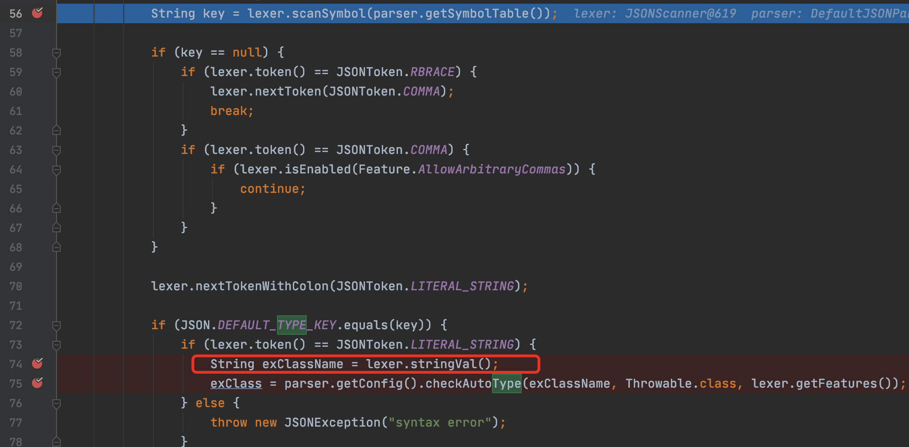
跟进checkAutoType方法,如果第二个参数设置了期望对象.expectClassFlag会置为true,这对后续绕过checkAutoType检查很重要
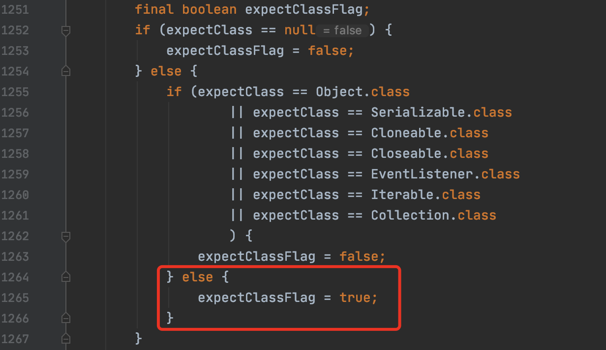
需要注意，依然会对org.openqa.selenium.WebDriverException进行黑名单检测

接着会将org.openqa.selenium.WebDriverException装载进内存中
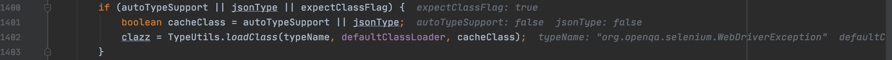
最后直接看含有return 代码块中，这里由于设置了期望类，且该类为Throwable子类，能够成功返回该类。所以可以利用的类被限制在Throwable子类下.
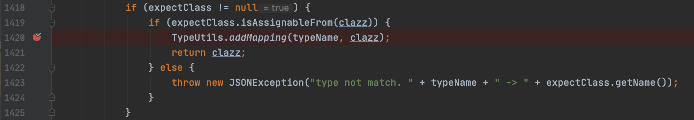
继续执行，经过com/alibaba/fastjson/parser/deserializer/ThrowableDeserializer.java第115行createException
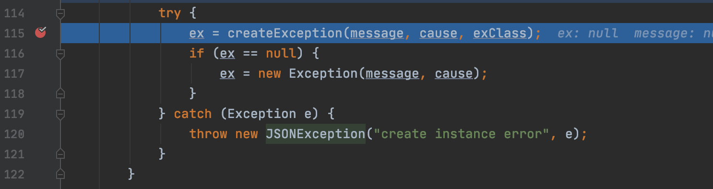
跟进该方法,这里对org.openqa.selenium.WebDriverException进行实例化
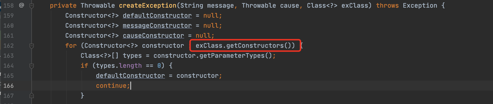
最后就会输出systemInformation结果，\"content\":{\"$ref\":\"$x.systemInformation\"}利用$ref去引用@type生成的实例方法,就能够调用getSystemInformation方法.
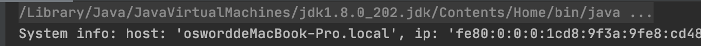
关于SET方法调用
由于org.openqa.selenium.WebDriverException该类中没有set方法.如果能够找到Exction类中存在set方法.最后会在com/alibaba/fastjson/parser/deserializer/ThrowableDeserializer.java第149行调用.目前还没找到异常类set方法危险调用，先鸽
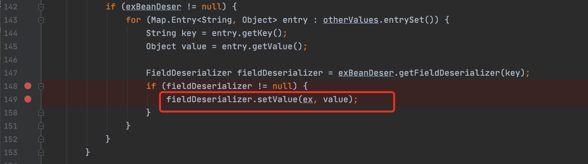